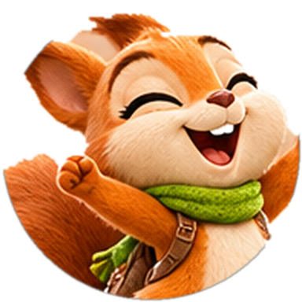

Белкин лес
Белочка бежит в глубину леса. Собери 15 желудей, уворачивайся от хищников и перепрыгивай препятствия!
← → — смена дорожки · ↑ или пробел — прыжок
На телефоне используй кнопки на экране.
🎮 Геймпад: стик или крестовина — движение, A / ✕ — прыжок, Start / Options — пауза.
🏆 Лучшее время: —